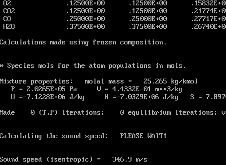

Apr 2026
Combustion Simulation
I did a bit of exploring in STANJAN and Cantera combustion simulation platforms. I found it very interesting adjusting the reaction conditions and seeing what different chemical species resulted. It reminded me how much I enjoy studying and applying chemistry. Also, I thought it was pretty cool using a local emulation of MS DOS to run STANJAN.
